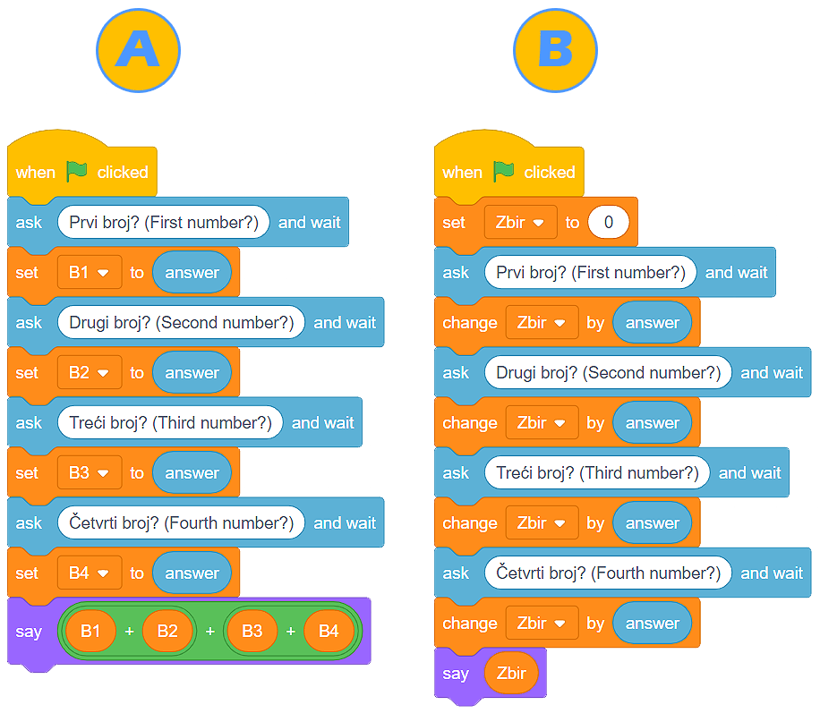

Promenljive¶
Verujemo da razumeš da isti program može da koristi više ljudi i da to razumevanje potiče iz tvog ličnog iskustva. Programe stvaramo sa namerom da olakšamo rešavanje određenih zadataka ili obavljanje pojedinih poslova. Stvaramo ih i sa namerom da se zabavimo, odmorimo, povežemo sa drugim ljudima.
Činjenica da isti program može da kristi više ljudi, unoseći svoje podatke i dobijajući odgovarajuće rezultate, govori da programiranja poseduje odličan koncept upravljanja i korišćenja memorije računara.
Zamisli memoriju digitalnog uređaja kao ogromnu, ali zaista ogromnu, skoro beskrajnu prostoriju u kojoj se nalaze nepregledni nizovi polica. Zamisli da u svaku pregradu svake od polica možeš da smestiš podatke. I, na kraju, zamisli da svaku od tih pregrada možeš da nazoveš kako želiš i da ti, čim pozoveš njeno ime, podaci koji se na njoj nalaze postaju odmah dostupni.
Te „pregrade” u memoriji računara nazivamo promenljive (varijable). Varijabla može da sadrži samo jedan podatak (broj, string, vrednost tačno ili netačno…).
Pitaj i čekaj¶
- U okviru kategorije Osećaji (Sensing) postoji blok Pitaj i čekaj . Ovaj blok funkcioniše tako što nam omogućava da postavimo zahtev korisniku (obično u formi molbe ili pitanja), a zatim čeka da kosnik klikne na dugme ili pritisne taster Enter.
- Odgovor korisnika smešta se u promenljivu , a program odmah nastavlja da se izvršava.
 Najbolje je da odmah upotrebimo ovaj blok. Napravićemo program u kome maca pita korisnika kako se zove, a zatim ponovi korisnikovo ime i izgovori da je ono veoma lepo.
Najbolje je da odmah upotrebimo ovaj blok. Napravićemo program u kome maca pita korisnika kako se zove, a zatim ponovi korisnikovo ime i izgovori da je ono veoma lepo.
- Dakle, klikom na zelenu zastavicu pokrećemo program. Nakon naredbe , izvršavanje programa se zaustavlja, u očekivanju da korisnik unese svoj odgovor u polje i pritisne dugme ili taster Enter. U tom trenutku, sadržaj promenljive ne postoji .
- Kada korisnik unese odgovor (npr. Mima) i pritisne dugme ili taster Enter, sadržaj promenljive biće
 .
. - Sada naša maca može da izgovori string
 koji smo napravili pomoću bloka za spajanje stingova
koji smo napravili pomoću bloka za spajanje stingova  (u polje apple postavili smo promenljivu , a u polje banana uneli string ” je lepo ime! (is a lovely name!)”.
(u polje apple postavili smo promenljivu , a u polje banana uneli string ” je lepo ime! (is a lovely name!)”.
Na donjoj slici prikazan je pojavni oblik izvršavanja našeg programa.
Kreiranje promenljivih¶
Razmotrimo situaciju u kojoj korisnik unosi 4 broja koja naš program zatim sabira i prikazuje zbir. Istina je je da blok Pitaj i čekaj omogućava da korisnik unese neku vrednost i da se ona zatim smešta u promenljivu . Ali, šta se dešava kada su nam potrebna 4 odgovora?
- 50
- Promenljiva sadrži samo jedan podatak (broj, string, vrednost tačno ili netačno...). Razmisli još jednom i označi tačan odgovor.
- 30
- Promenljiva sadrži samo jedan podatak (broj, string, vrednost tačno ili netačno...). Razmisli još jednom i označi tačan odgovor.
- 20
- Promenljiva sadrži samo jedan podatak (broj, string, vrednost tačno ili netačno...). Razmisli još jednom i označi tačan odgovor.
- 80
- U pravu si, bravo! U promenljivoj |VAnswer| nalazi se samo poslednji odgovor korisnika, a to je broj 20. Lik će izgovoriti 80 (20+20+20+20).
Q-10: Korisnik redom unosi sledeće brojeve: 5, 10, 15 i 20. Kada se program prikazan na slici izvrši, lik će izgovoriti:

Očigledno je da su nam je potrebno više od jedne promeljive kako bi program mogao da prikaže tačan zbir.
Promenljive kreiramo u okviru kategorije Promenljive (Variables), klikom na dugme Napravi promenljivu (Make a variable). Otvoriće se prozor u kome treba da upišemo ime promenljive, a zatim označimo da li će ona biti dostupna svim likovima ili samo liku koji je aktivan u trenutku kada varijablu kreiramo. Takođe, možemo da označimo opciju koja omogućava da promenljiva bude sačuvana na serveru, u oblaku podataka. Klikom na dugme OK kreiramo varijablu.
Na donjoj slici prikazani su blokovi koji nam postaju dostupni nakon formiranja promenljive. Pomoću prvog postavljano početnu vrednost promeljive, drugi koristimo kada želimo da uvećamo ili umanjimo njenu vrednost, dok su treći četvrti namenjeni osiguravanju da promenljiva bude vidljiva odnosno nevidljiva.

- Skripte A i B imaju isti rezultat izvršavanja
- Odlično zapažaš, bravo! Iako su različiti, programi imaju isti rezultat izvršavanja.
- Skripte A i B imaju različit rezultat izvršavanja
- Razmisli o svom odgovoru. Ako ostaneš pri svom mišljenju, napravi ove programe u Skreču i izvrši ih. Ne zaboravi da označiš da vrednosti promenljivih budu vidljive na pozornici.
Q-11: Analiziraj date skripte i označi tačno tvrđenje:
